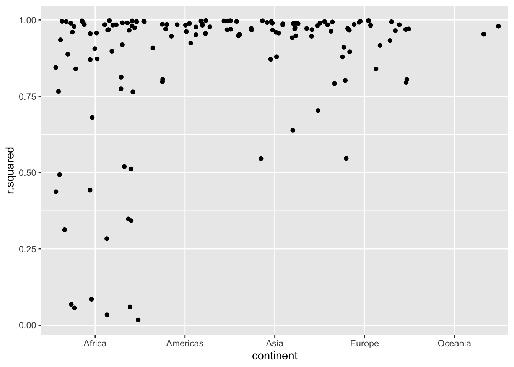

4.6 Modeling (broom)
4.6.1 Nesting
4.6.1.1 nest
The following example comes from R for Data Science by Garrett Grolemund and Hadley Wickham.
- How can you run multiple models simultaneously? Using a nested data frame.
Hadley Wickham: Managing many models with R
Grouped data: each row = an observation
Nested data: each row = a group
Challenge
Why did we use country and continent for nesting variables in the following example?
## # A tibble: 6 × 3
## # Groups: country, continent [6]
## country continent data
## <fct> <fct> <list>
## 1 Afghanistan Asia <tibble [12 × 4]>
## 2 Albania Europe <tibble [12 × 4]>
## 3 Algeria Africa <tibble [12 × 4]>
## 4 Angola Africa <tibble [12 × 4]>
## 5 Argentina Americas <tibble [12 × 4]>
## 6 Australia Oceania <tibble [12 × 4]>## # A tibble: 12 × 4
## year lifeExp pop gdpPercap
## <int> <dbl> <int> <dbl>
## 1 1952 28.8 8425333 779.
## 2 1957 30.3 9240934 821.
## 3 1962 32.0 10267083 853.
## 4 1967 34.0 11537966 836.
## 5 1972 36.1 13079460 740.
## 6 1977 38.4 14880372 786.
## 7 1982 39.9 12881816 978.
## 8 1987 40.8 13867957 852.
## 9 1992 41.7 16317921 649.
## 10 1997 41.8 22227415 635.
## 11 2002 42.1 25268405 727.
## 12 2007 43.8 31889923 975.- Custom function
- Apply function to the nested data
# Apply m_model to the nested data
nested <- nested %>%
mutate(models = map(data, lm_model)) # Add the list object as a new column
head(nested)## # A tibble: 6 × 4
## # Groups: country, continent [6]
## country continent data models
## <fct> <fct> <list> <list>
## 1 Afghanistan Asia <tibble [12 × 4]> <lm>
## 2 Albania Europe <tibble [12 × 4]> <lm>
## 3 Algeria Africa <tibble [12 × 4]> <lm>
## 4 Angola Africa <tibble [12 × 4]> <lm>
## 5 Argentina Americas <tibble [12 × 4]> <lm>
## 6 Australia Oceania <tibble [12 × 4]> <lm>S3 is part of R’s object-oriented systems. If you need further information, check out this section in Hadley’s Advanced R.
4.6.1.2 unnest
- glance()
glance() function from broom package inspects the quality of a statistical model.
Additional tips
broom::glance(model): for evaluating model quality and/or complexitybroom::tidy(model): for extracting each coefficient in the model (the estimates + its variability)broom::augment(model, data): for getting extra values (residuals, and influence statistics). A convenient tool if you want to plot fitted values and raw data together.
glanced <- nested %>%
mutate(glance = map(models, broom::glance))
# Pluck the first item on the list
glanced$glance %>% pluck(1)## # A tibble: 1 × 12
## r.squared adj.r.squared sigma statistic p.value df logLik AIC BIC
## <dbl> <dbl> <dbl> <dbl> <dbl> <dbl> <dbl> <dbl> <dbl>
## 1 0.948 0.942 1.22 181. 0.0000000984 1 -18.3 42.7 44.1
## # ℹ 3 more variables: deviance <dbl>, df.residual <int>, nobs <int>## value
## 9.835213e-08unnest() unpacks the list objects stored in the glanced column
## # A tibble: 142 × 16
## # Groups: country, continent [142]
## country continent data models r.squared adj.r.squared sigma statistic
## <fct> <fct> <list> <list> <dbl> <dbl> <dbl> <dbl>
## 1 Rwanda Africa <tibble> <lm> 0.0172 -0.0811 6.56 0.175
## 2 Botswana Africa <tibble> <lm> 0.0340 -0.0626 6.11 0.352
## 3 Zimbabwe Africa <tibble> <lm> 0.0562 -0.0381 7.21 0.596
## 4 Zambia Africa <tibble> <lm> 0.0598 -0.0342 4.53 0.636
## 5 Swaziland Africa <tibble> <lm> 0.0682 -0.0250 6.64 0.732
## 6 Lesotho Africa <tibble> <lm> 0.0849 -0.00666 5.93 0.927
## 7 Cote d'Ivo… Africa <tibble> <lm> 0.283 0.212 3.93 3.95
## 8 South Afri… Africa <tibble> <lm> 0.312 0.244 4.74 4.54
## 9 Uganda Africa <tibble> <lm> 0.342 0.276 3.19 5.20
## 10 Congo, Dem… Africa <tibble> <lm> 0.348 0.283 2.43 5.34
## # ℹ 132 more rows
## # ℹ 8 more variables: p.value <dbl>, df <dbl>, logLik <dbl>, AIC <dbl>,
## # BIC <dbl>, deviance <dbl>, df.residual <int>, nobs <int>
- tidy()
nested <- gapminder %>%
group_by(continent) %>%
nest()
nested <- nested %>%
mutate(models = map(data, ~ lm(lifeExp ~ year + country, data = .)))
tidied <- nested %>%
mutate(tidied = map(models, broom::tidy))
model_out <- tidied %>%
unnest(tidied) %>%
mutate(term = str_replace(term, "country", "")) %>%
dplyr::select(continent, term, estimate, p.value) %>%
mutate(p_threshold = ifelse(p.value < 0.05, 1, 0))
model_out %>%
dplyr::filter(p_threshold == 1) %>%
pull(term) %>%
unique()## [1] "(Intercept)" "year"
## [3] "Bahrain" "Bangladesh"
## [5] "Cambodia" "China"
## [7] "Hong Kong, China" "India"
## [9] "Indonesia" "Iran"
## [11] "Iraq" "Israel"
## [13] "Japan" "Jordan"
## [15] "Korea, Dem. Rep." "Korea, Rep."
## [17] "Kuwait" "Lebanon"
## [19] "Malaysia" "Mongolia"
## [21] "Myanmar" "Nepal"
## [23] "Oman" "Pakistan"
## [25] "Philippines" "Saudi Arabia"
## [27] "Singapore" "Sri Lanka"
## [29] "Syria" "Taiwan"
## [31] "Thailand" "Vietnam"
## [33] "West Bank and Gaza" "Yemen, Rep."
## [35] "Austria" "Belgium"
## [37] "Croatia" "Czech Republic"
## [39] "Denmark" "Finland"
## [41] "France" "Germany"
## [43] "Greece" "Iceland"
## [45] "Ireland" "Italy"
## [47] "Montenegro" "Netherlands"
## [49] "Norway" "Poland"
## [51] "Portugal" "Slovak Republic"
## [53] "Slovenia" "Spain"
## [55] "Sweden" "Switzerland"
## [57] "Turkey" "United Kingdom"
## [59] "Angola" "Benin"
## [61] "Botswana" "Burkina Faso"
## [63] "Burundi" "Cameroon"
## [65] "Central African Republic" "Chad"
## [67] "Comoros" "Congo, Dem. Rep."
## [69] "Congo, Rep." "Cote d'Ivoire"
## [71] "Djibouti" "Equatorial Guinea"
## [73] "Eritrea" "Ethiopia"
## [75] "Gabon" "Gambia"
## [77] "Ghana" "Guinea"
## [79] "Guinea-Bissau" "Kenya"
## [81] "Lesotho" "Liberia"
## [83] "Madagascar" "Malawi"
## [85] "Mali" "Mauritania"
## [87] "Mauritius" "Mozambique"
## [89] "Namibia" "Niger"
## [91] "Nigeria" "Reunion"
## [93] "Rwanda" "Senegal"
## [95] "Sierra Leone" "Somalia"
## [97] "South Africa" "Sudan"
## [99] "Swaziland" "Tanzania"
## [101] "Togo" "Uganda"
## [103] "Zambia" "Zimbabwe"
## [105] "Bolivia" "Brazil"
## [107] "Canada" "Colombia"
## [109] "Dominican Republic" "Ecuador"
## [111] "El Salvador" "Guatemala"
## [113] "Haiti" "Honduras"
## [115] "Mexico" "Nicaragua"
## [117] "Paraguay" "Peru"
## [119] "Puerto Rico" "Trinidad and Tobago"
## [121] "United States" "Venezuela"
## [123] "New Zealand"## [1] "Bosnia and Herzegovina" "Bulgaria" "Hungary"
## [4] "Romania" "Serbia" "Egypt"
## [7] "Libya" "Morocco" "Sao Tome and Principe"
## [10] "Tunisia" "Chile" "Costa Rica"
## [13] "Cuba" "Jamaica" "Panama"
## [16] "Uruguay"4.6.2 Mapping
We tasted a bit of how map() function works. Let’s dig into it more in-depth, as this family of functions is useful. See Rebecca Barter’s excellent tutorial on the purrr package for more information. In her words, this is “the tidyverse’s answer to apply functions for iteration”. map() function can take a vector (of any type), a list, and a dataframe for input.
multiply <- function(x) {
x * x
}
df <- list(
first_obs = rnorm(7, 1, sd = 1),
second_obs = rnorm(7, 2, sd = 2)
) # normal distributionChallenge
Try map_df(.x = df, .f = multiply) and tell me what’s the difference between the output you got and what you saw earlier.
If you want to know more about the power and joy of functional programming in R (e.g., purrr::map()), then please take “How to Automate Repeated Things in R” workshop.